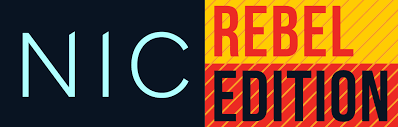
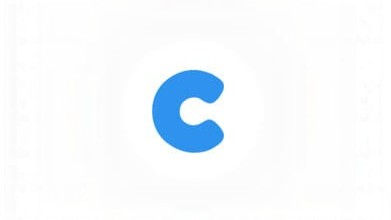

Job Experience
Bakgrunnsskuespiller
okt. 2023 - okt. 2023
Første møte med en hvilken som helst jobb.
Lærte hvordan man jobber etter instruksjoner.
Her lærte jeg også mye om tålmodighet og ansvarlighet.
Filming av serien 'Lik Meg' sesong 7:


NIC: Rebel Edition (IT-konferanse)
okt. 2025 - okt. 2025
Bidro frivillig under det nasjonale IT-konferansen NIC Rebel Edition.
Arbeidsoppgavene mine var å veivise deltakere inn i området,
sitte på informasjonsdesken og være sal vakt i en sal.
Erfaringen ga innsikt i arrangementsteknologi, kundeservice og
samarbeid i et profesjonelt miljø.

Comono AS
jan. 2026 - feb. 2026
fjsgsjjerq
fjeqjbt